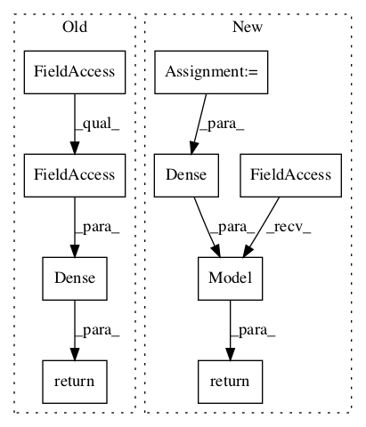

b68db1aaf6abe4d2cea8321cc6f1564228dd60f5,deepchem/models/tensorgraph/models/seqtoseq.py,AspuruGuzikAutoEncoder,_create_decoder,#AspuruGuzikAutoEncoder#Any#Any#,529

Before Change
prev_layer = layers.Dropout(dropout, in_layers=prev_layer)
prev_layer = layers.GRU(
self._decoder_dimension, self.batch_size, in_layers=prev_layer)
retval = layers.Dense(
len(self._output_tokens),
in_layers=prev_layer,
activation_fn=tf.nn.softmax,
name="output")
return retval
def _generate_batches(self, sequences):
Create feed_dicts for fitting.
for batch in self._batch_elements(sequences):
After Change
def _create_decoder(self, n_layers, dropout):
Create the decoder as a tf.keras.Model.
input = Input(shape=(self._embedding_dimension,))
prev_layer = Dense(self._embedding_dimension, activation=tf.nn.relu)(input)
prev_layer = layers.Stack()(self._max_output_length * [prev_layer])
for i in range(3):
if dropout > 0.0:
prev_layer = Dropout(dropout)(prev_layer)
prev_layer = GRU(
self._decoder_dimension, return_sequences=True)(prev_layer)
output = Dense(
len(self._output_tokens), activation=tf.nn.softmax)(prev_layer)
return tf.keras.Model(inputs=input, outputs=output)
def _create_input_array(self, sequences):
return self._create_output_array(sequences)
In pattern: SUPERPATTERN
Frequency: 3
Non-data size: 9
Instances
Project Name: deepchem/deepchem
Commit Name: b68db1aaf6abe4d2cea8321cc6f1564228dd60f5
Time:
Author: null
File Name: deepchem/models/tensorgraph/models/seqtoseq.py
Class Name: AspuruGuzikAutoEncoder
Method Name: _create_decoder
Project Name: deepchem/deepchem
Commit Name: b68db1aaf6abe4d2cea8321cc6f1564228dd60f5
Time:
Author: null
File Name: deepchem/models/tensorgraph/models/seqtoseq.py
Class Name: SeqToSeq
Method Name: _create_decoder
Project Name: deepchem/deepchem
Commit Name: b68db1aaf6abe4d2cea8321cc6f1564228dd60f5
Time:
Author: null
File Name: deepchem/models/tensorgraph/models/seqtoseq.py
Class Name: AspuruGuzikAutoEncoder
Method Name: _create_encoder